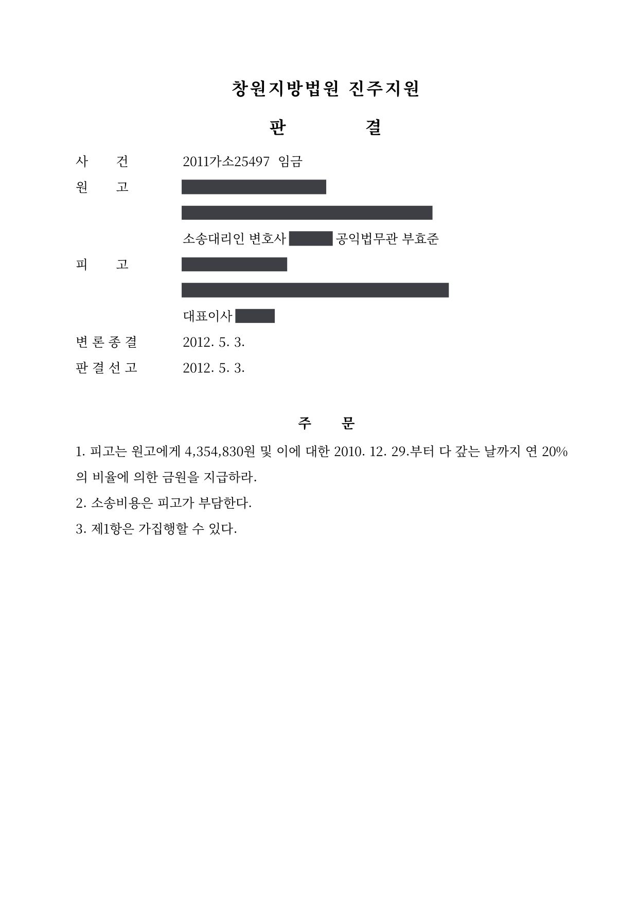

임금 청구 소액사건
창원지방법원 진주지원 2011가소25497 · 근로자 대리 · 담당변호사 부효준
사건의 요지
사용자가 지급하지 않은 체불임금의 지급을 구한 사건으로, 변론을 거쳐 청구 전액이 인용되었습니다.
판결문 1장

비슷한 처분을 받으셨다면
행정처분은 처분이 있음을 안 날부터 90일 이내에 행정심판이나 취소소송으로 다투어야 하고, 기간이 지나면 돌이킬 수 없는 처분은 집행정지를 서둘러야 합니다. 처분서를 받은 날짜부터 확인해 드립니다.